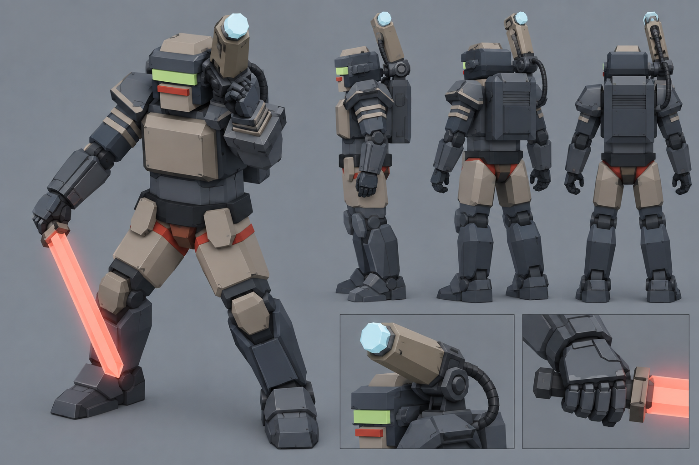
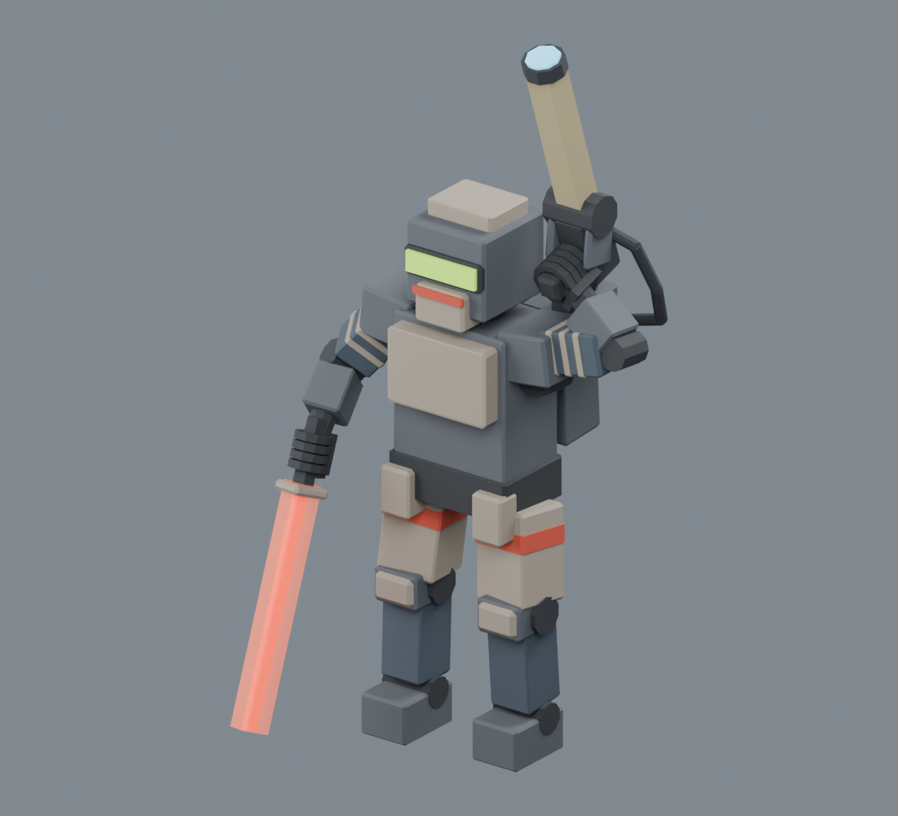
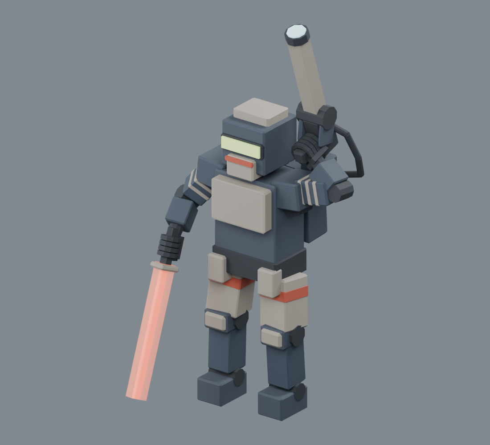
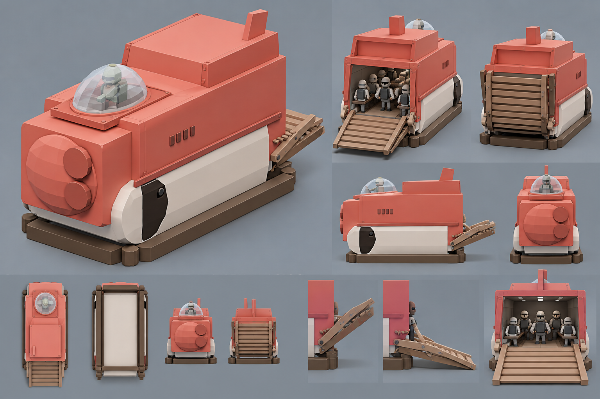
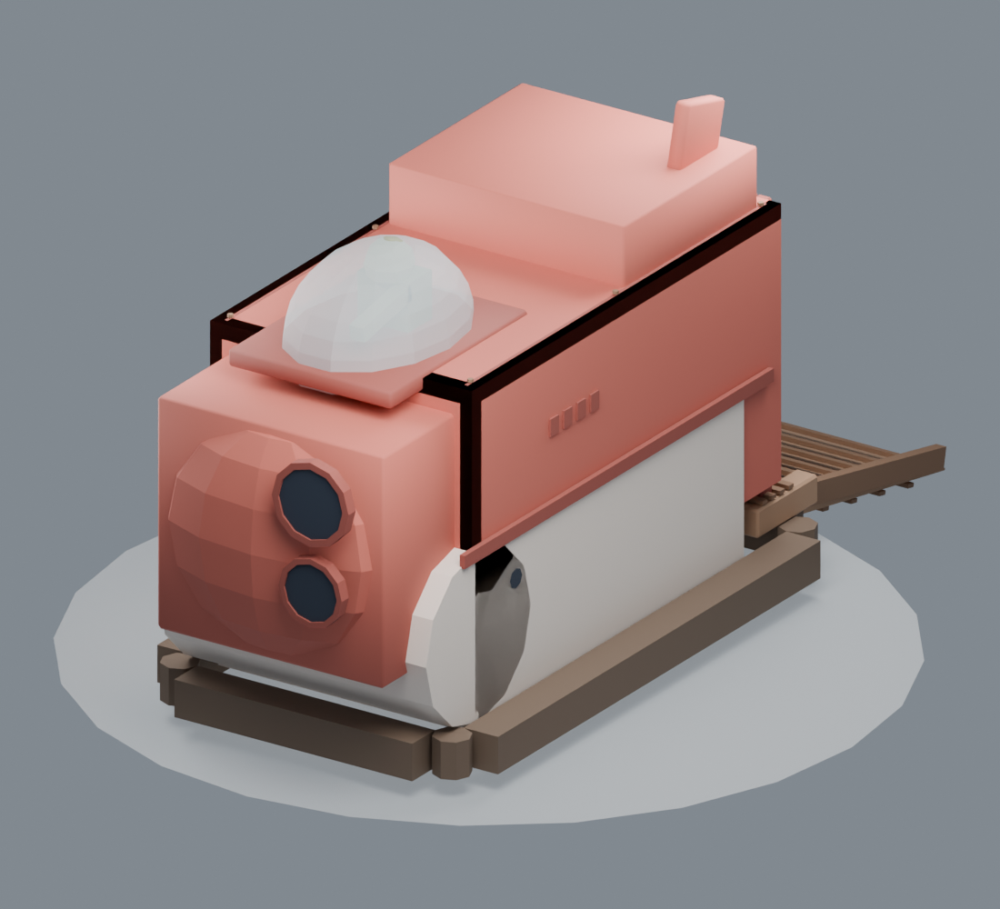
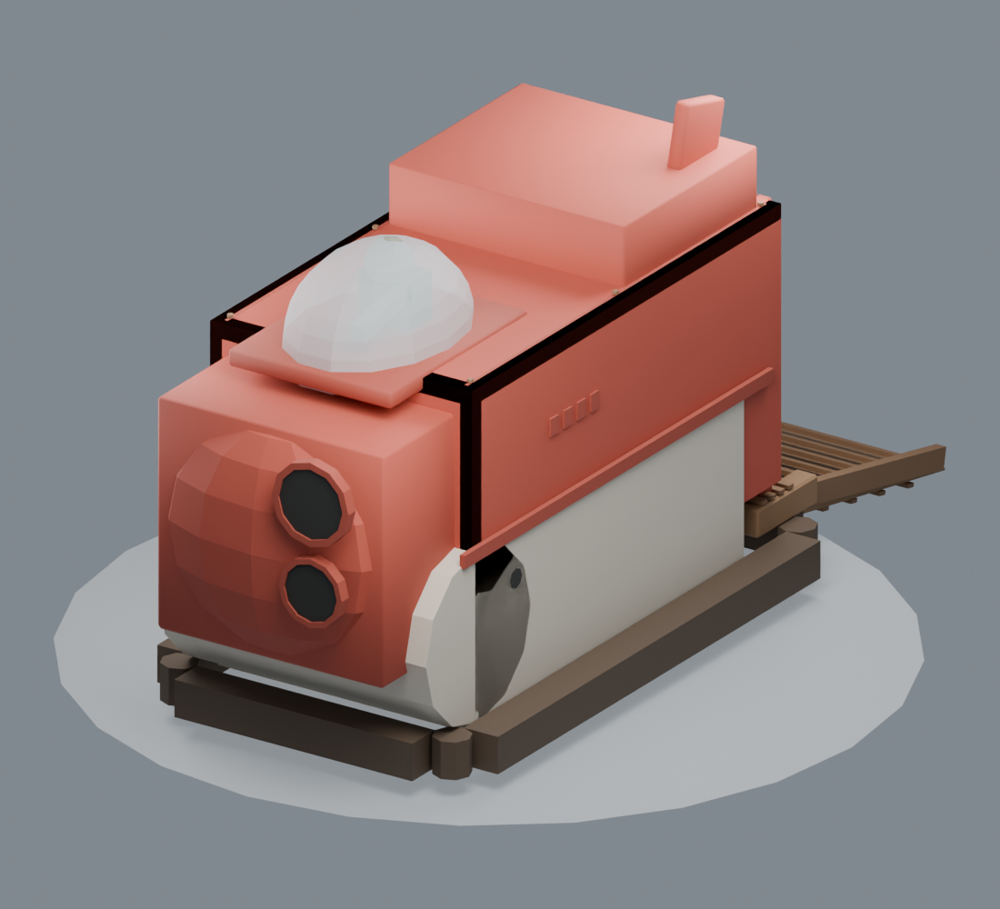
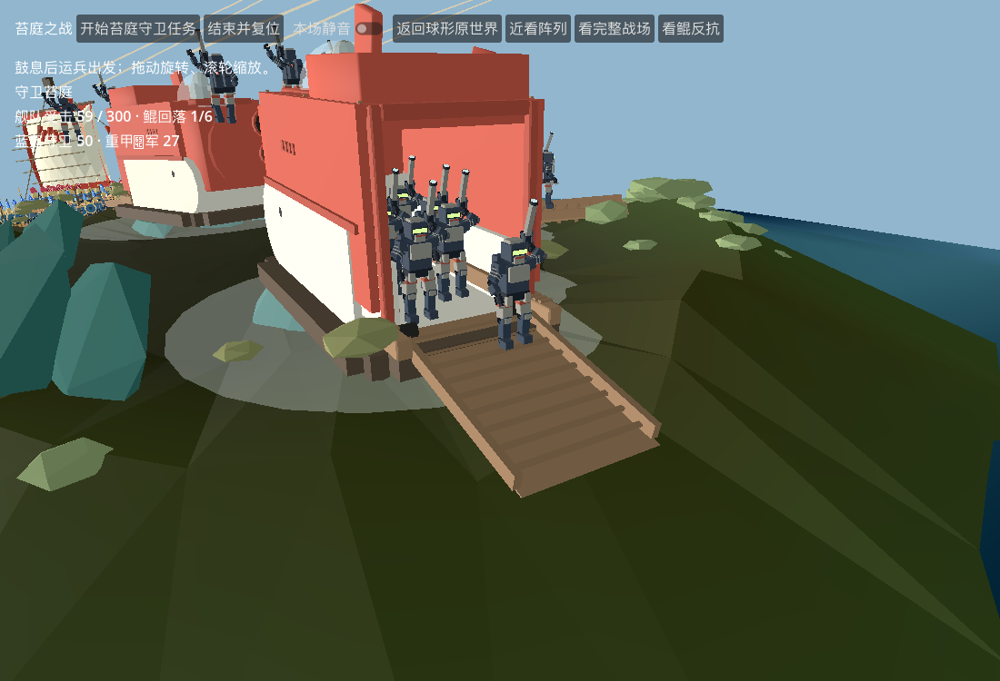

重甲兵与 SOCCO · 配色对照
只调整材质配色，保持几何、层级、动作以及原金属度和粗糙度。目标图带有绘制光影，不能把材质色值相同当成最终画面完全一致。
重甲兵
炭蓝灰装甲、灰褐护板与肩炮，保留红色标记和发光部件。
目标图


调整前 · 相同灯光与镜头，实际GLB回读
调整后 · 相同灯光与镜头，实际GLB回读SOCCO 运兵艇
珊瑚砖红上壳、暖象牙白下舱、深棕底座与木色坡道。
目标图


调整前 · 相同灯光与镜头，实际GLB回读
调整后 · 相同灯光与镜头，实际GLB回读Godot 实际战场出舱

新版重甲兵与新版SOCCO在自然战斗触发后出舱；本轮验证配色接入，不等于整场战斗验收。
返回苔庭总览